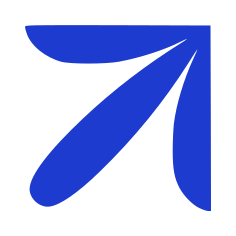
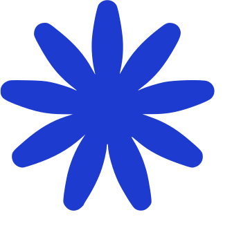

40%
are out of work, education or training by their early 20s.
Bringing a wider worldof work within reach.
At 18, leaving the care
system can mean facing
adulthood alone.
are out of work, education or training by their early 20s.
3× their peers.
They are resilient, adaptable, loyal, and driven.
Traditional hiring routes weren’t built for them.
We connect employers with care-experienced young people, and back both until the job sticks.
Screened for readiness. Matched to your roles.

Practical guidance from day one.

Ongoing support beyond the start date.

Help change a young person’s future.

Be one of the first to change what’s possible for care leavers, for good.
Ask about our 2027 London Pilot